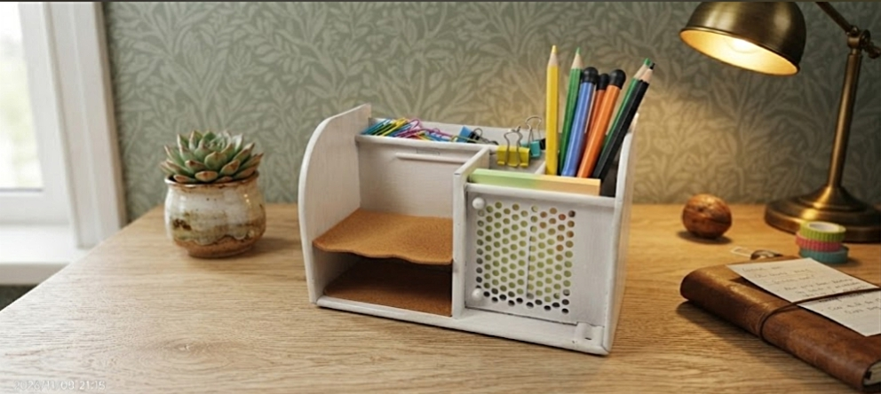
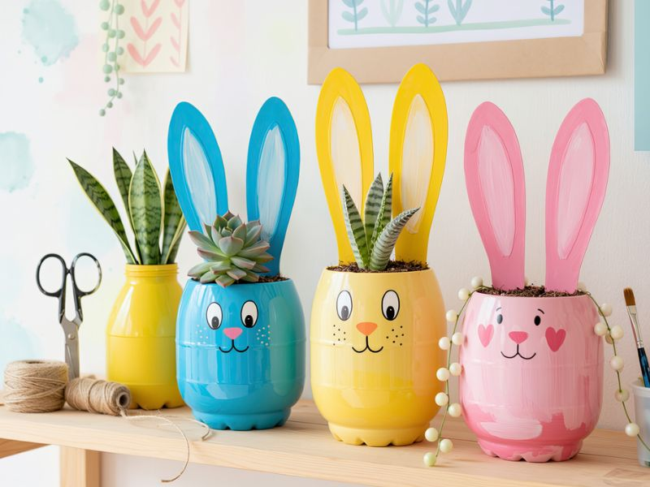
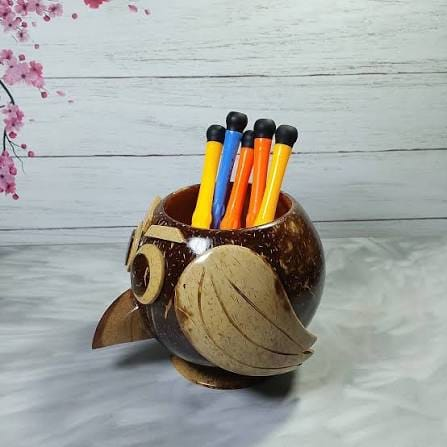
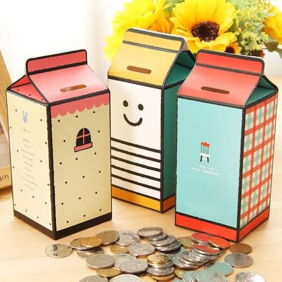
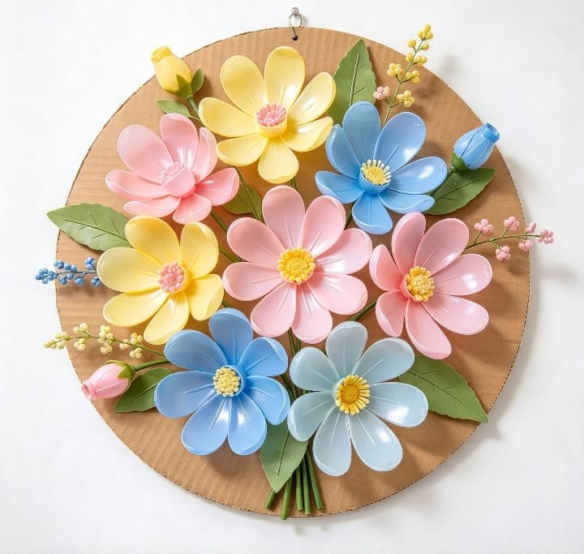
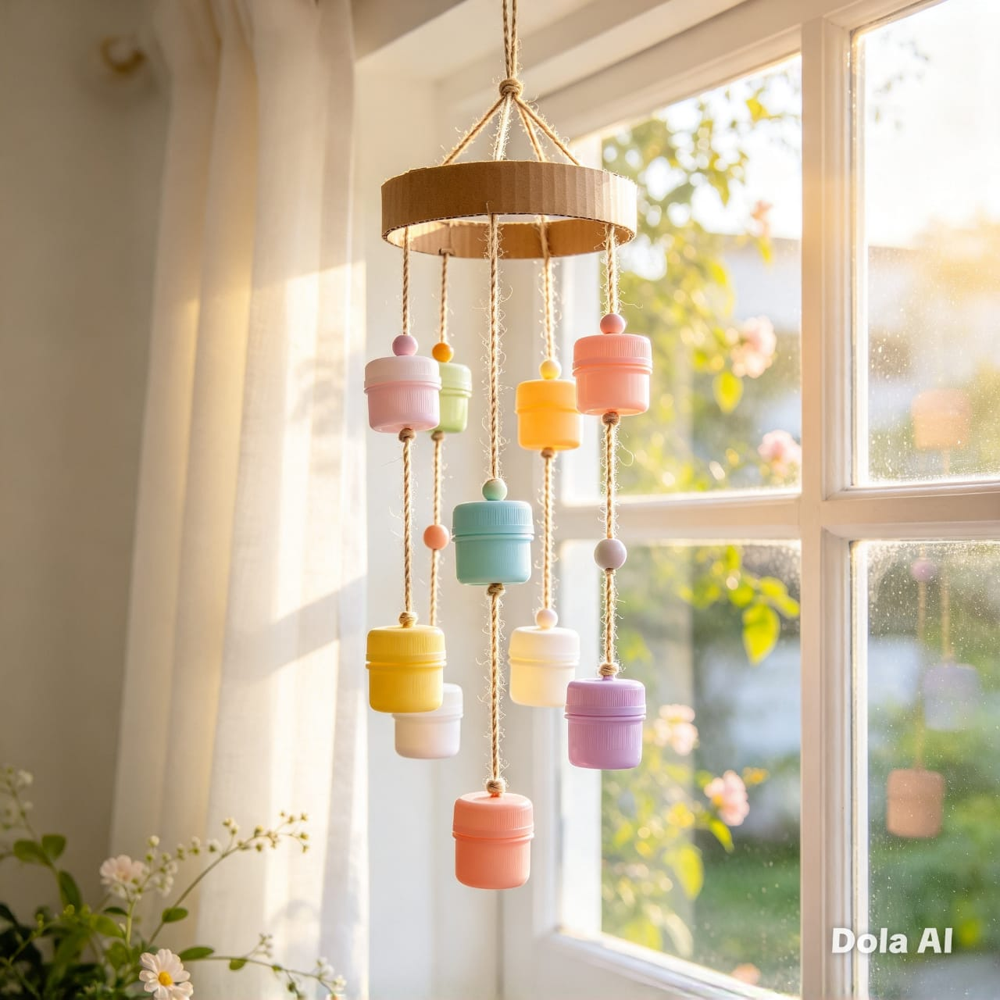

DESCRIPTION
Deskripsi Produk
Stationery Organizer memanfaatkan casing PC bekas menjadi tempat penyimpanan alat tulis meja. Bagian dalamnya ditata sebagai ruang penyimpanan, sedangkan lampu LED dan dekorasi memberikan tampilan bertema teknologi.
PROJECT JOURNAL / THE CREATIONS
Enam karya dari material yang diberi kesempatan kedua.
PRODUCT 01 / PC CASE · E-WASTE
← Kembali ke karya
FROM SCRAP TO CREATION
Casing PC bekas diubah menjadi tempat penyimpanan alat tulis dengan sentuhan dekorasi komponen elektronik dan lampu LED.
DESCRIPTION
Stationery Organizer memanfaatkan casing PC bekas menjadi tempat penyimpanan alat tulis meja. Bagian dalamnya ditata sebagai ruang penyimpanan, sedangkan lampu LED dan dekorasi memberikan tampilan bertema teknologi.
PURPOSE
Mengurangi limbah elektronik sekaligus menghasilkan tempat alat tulis yang kokoh, fungsional, dan memiliki nilai estetika serta nilai jual.
PRODUCT 01 · DETAILS
Harga alat tidak dimasukkan ke perhitungan karena belum tersedia. Gunakan alat khusus dengan pendampingan orang dewasa.
PRODUCT 01 · PROCESS
Penanganan casing, komponen elektronik, alat potong, gerinda, dan alat panas harus dilakukan dengan pendampingan orang dewasa.
PRODUCT 02 / PLASTIC BOTTLE · REUSE
← Kembali ke karya
FROM SCRAP TO CREATION
Botol plastik bekas diubah menjadi pot tanaman hias berbentuk karakter.
DESCRIPTION
Pot tanaman dibuat dari botol plastik bekas yang dibersihkan, dibentuk, dan dihias menggunakan cat serta spidol. Produk berfungsi sebagai wadah tanaman sekaligus dekorasi ruangan.
PURPOSE
Memanfaatkan botol plastik bekas menjadi wadah tanam yang menarik dan membantu mengurangi sampah plastik.
PRODUCT 02 · DETAILS
Harga satuan alat dan bahan tidak dirinci dalam laporan. Total mengikuti estimasi biaya produk.
PRODUCT 02 · PROCESS
Bagian pemotongan dikerjakan dengan bantuan orang dewasa.
PRODUCT 03 / COCONUT SHELL · RECYCLE
← Kembali ke karya
FROM SCRAP TO CREATION
Batok kelapa dibentuk menjadi figur burung hantu yang berfungsi sebagai wadah alat tulis.
DESCRIPTION
Tempat pensil dari batok kelapa merupakan kerajinan fungsional yang memanfaatkan limbah organik. Batok dibersihkan, dibentuk, dan dirangkai menyerupai burung hantu.
PURPOSE
Mengolah limbah batok kelapa menjadi wadah alat tulis yang memiliki nilai guna dan estetika.
PRODUCT 03 · DETAILS
Harga satuan alat dan bahan tidak dirinci dalam laporan. Proses menggunakan alat khusus perlu pendampingan orang dewasa.
PRODUCT 03 · PROCESS
Pemotongan dan pengukiran harus dilakukan oleh orang dewasa.
PRODUCT 04 / CARTON · REUSE
← Kembali ke karya
FROM SCRAP TO CREATION
Kemasan bekas susu atau jus dimanfaatkan kembali menjadi wadah menabung.
DESCRIPTION
Celengan dibuat dari kemasan karton susu atau jus yang dibersihkan dan dihias menggunakan kertas warna atau HVS. Produk dapat digunakan sebagai wadah untuk menyimpan uang.
PURPOSE
Menggunakan kembali kemasan karton menjadi benda yang berguna sekaligus membiasakan kegiatan menabung.
PRODUCT 04 · DETAILS
Harga satuan alat dan bahan tidak dirinci dalam laporan. Total mengikuti estimasi biaya produk.
PRODUCT 04 · PROCESS
Pembuatan celah uang menggunakan alat pemotong perlu bantuan orang dewasa.
PRODUCT 05 / PLASTIC BOTTLE · RECYCLE
← Kembali ke karya
FROM SCRAP TO CREATION
Botol plastik bekas disusun menjadi rangkaian bunga dekoratif.
DESCRIPTION
Hiasan bunga memanfaatkan bagian botol plastik bekas sebagai kelopak yang disusun di atas alas kardus. Karya ini menghasilkan dekorasi dinding dengan bentuk dan warna yang menarik.
PURPOSE
Mengurangi limbah botol plastik dengan mengolahnya menjadi dekorasi dinding yang menarik.
PRODUCT 05 · DETAILS
Harga satuan alat dan bahan tidak dirinci dalam laporan. Total mengikuti estimasi biaya produk.
PRODUCT 05 · PROCESS
Pemotongan plastik dilakukan dengan bantuan orang dewasa.
PRODUCT 06 / PLASTIC LIDS · REUSE
← Kembali ke karya
FROM SCRAP TO CREATION
Tutup dan wadah plastik bekas dirangkai menjadi dekorasi gantung.
DESCRIPTION
Wind chime atau hiasan gantung dibuat dari tutup dan wadah plastik bekas yang dirangkai menggunakan tali. Produk ini memberikan sentuhan dekoratif pada ruangan.
PURPOSE
Memanfaatkan tutup dan wadah plastik bekas menjadi hiasan gantung yang unik dan menarik.
PRODUCT 06 · DETAILS
Harga satuan alat dan bahan tidak dirinci dalam laporan. Total mengikuti estimasi biaya produk.
PRODUCT 06 · PROCESS
Pembuatan lubang pada komponen dilakukan dengan bantuan orang dewasa.